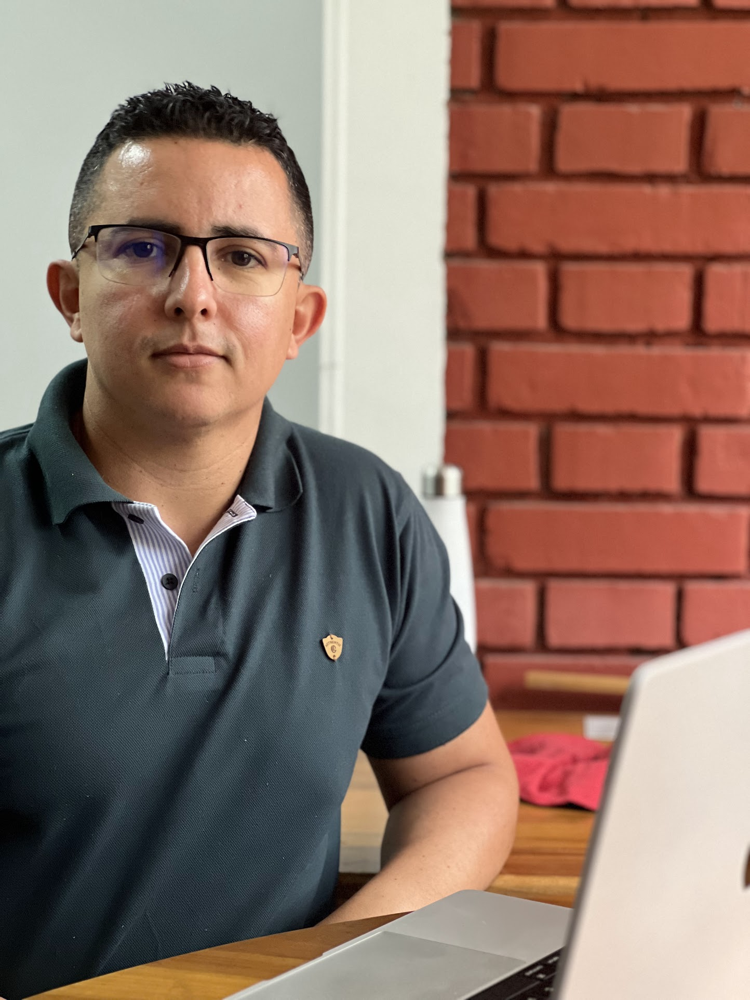
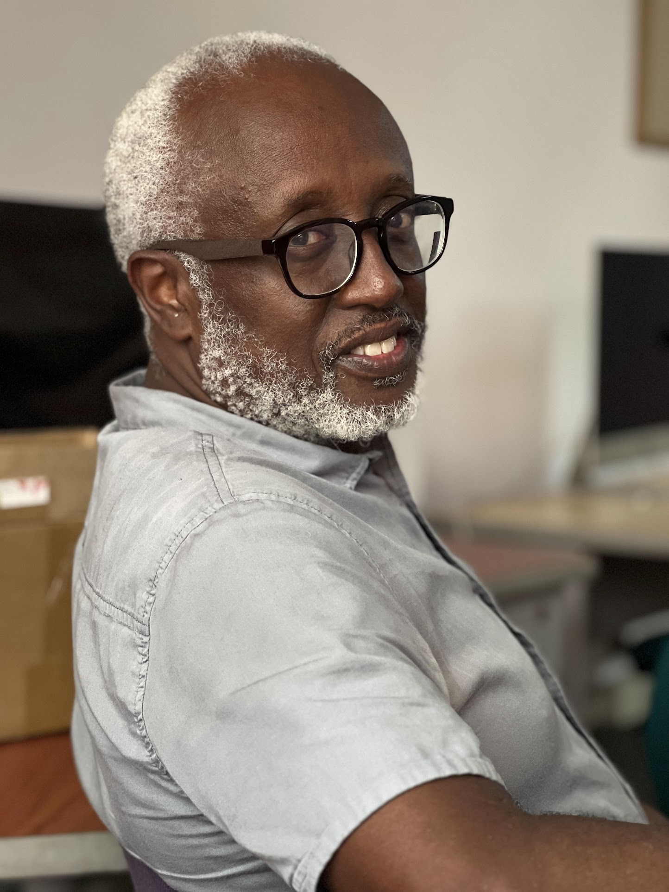

Somos un laboratorio de investigación y creación pedagógica radicado en la Escuela de Comunicación Social de la Universidad del Valle, Cali, Colombia.
LAMA nació en 2025 luego de preguntarnos por qué no existe en América Latina un conjunto de herramientas y entornos pedagógicos para enseñar críticamente sobre los algoritmos.
Teníamos teoría: Zuboff, Noble, Crawford, O'Neil en el norte global; Martín-Barbero, Freire, García Canclini en el sur. Pero no teníamos artefactos que llevaran esas ideas al aula de una manera que los estudiantes pudieran experienciar directamente.
Así que decidimos crearlos. No importando marcos del norte global, sino desarrollando herramientas situadas en nuestra realidad, desde nuestra historia intelectual, con nuestros contextos como referencia.
Crear artefactos pedagógicos interactivos de código abierto para la alfabetización algorítmica crítica, contribuir a la investigación sobre mediaciones algorítmicas, desarrollar artefactos interactivos para el mejoramiento del aprendizaje social y construir comunidad entre quienes trabajan por una ciudadanía digital soberana.
Un continente latinoamericano donde la comprensión crítica de los sistemas algorítmicos sea parte de la formación básica ciudadana.

Doctor en Comunicación Social por la Universidad Pompeu Fabra, de Barcelona. Especialista en estudios de plataformas y alfabetización algorítmica crítica. Profesor de la Escuela de Comunicación Social, Universidad del Valle.

Doctor en Psicología por la Universidad del Valle, Cali, Colombia. Especialista en estudios de plataformas, periodismo, diseño y creación de juegos. Profesor de la Escuela de Comunicación Social, Universidad del Valle.
No importamos marcos del norte global. Partimos de la tradición intelectual latinoamericana y de los problemas concretos de nuestra región.
Todos nuestros artefactos, guías pedagógicas y publicaciones son de libre acceso. El conocimiento regresa a la comunidad que lo hace posible.
No demonizamos la tecnología. Buscamos comprensión matizada: visibilizar mecanismos de poder sin cerrar la posibilidad de imaginar tecnologías más justas.
Los mejores artefactos los hemos diseñado con docentes, no para docentes. La comunidad no es una audiencia: es co-investigadora y co-diseñadora.
Los conceptos se internalizan cuando se viven. Nuestros artefactos crean situaciones de aprendizaje genuinas donde los estudiantes actúan y reflexionan.
La accesibilidad no está reñida con el rigor. Nuestros artefactos se basan en investigación sólida y nuestras guías citan las fuentes en las que se fundamentan.
Estamos interesados en alianzas con instituciones educativas, grupos de investigación, organizaciones de la sociedad civil y periodistas que trabajen temas relacionados. Escríbenos.